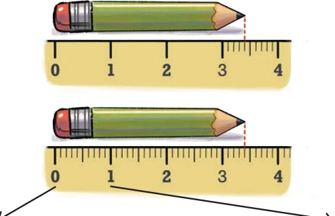
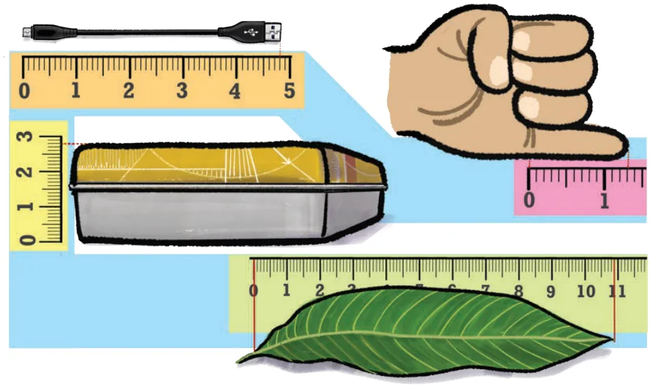
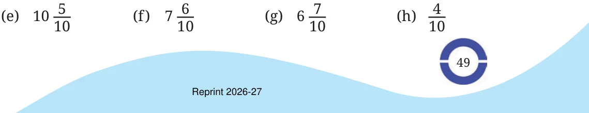
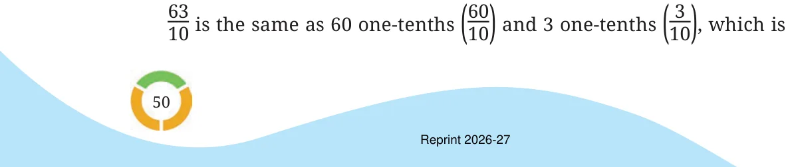
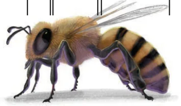
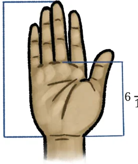
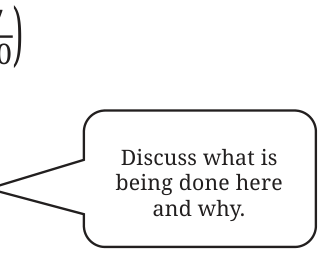
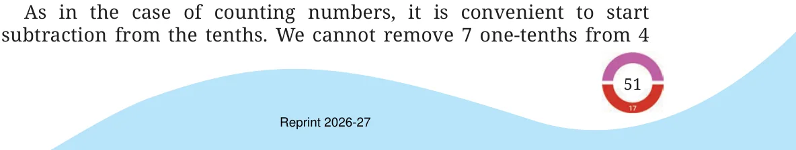

The length of the pencil shown in the figure below is \(3\frac{4}{10}\) units, which can also be read as 3 units and four one-tenths, i.e., \((3 \times 1) + \left(4 \times \frac{1}{10}\right)\) units.

\(\frac{1}{10} + \frac{1}{10} + \frac{1}{10} + \frac{1}{10} + \frac{1}{10} + \frac{1}{10} + \frac{1}{10} + \frac{1}{10} + \frac{1}{10} + \frac{1}{10}\)
\(= 10 \text{ times } \frac{1}{10} = 10 \times \frac{1}{10} = 1 \text{ unit}\)
This length is the same as 34 one-tenths units because 10 one-tenths units make one unit.
\(34 \times \frac{1}{10} = \frac{34}{10} = \frac{10}{10} + \frac{10}{10} + \frac{10}{10} + \frac{4}{10} \text{ (34 one-tenths)}\)
\(= 1 + 1 + 1 + \frac{4}{10} \text{ (3 and 4 one-tenths)}\)
A few numbers with fractional units are shown below along with how to read them.
\(4\frac{1}{10} \longrightarrow\) ‘four and one-tenth’
\(\frac{4}{10} \longrightarrow\) ‘four one-tenths’ or ‘four-tenths’
\(\frac{41}{10} \longrightarrow\) ‘forty-one one-tenths’ or ‘forty-one tenths’
\(41\frac{1}{10} \longrightarrow\) ‘forty-one and one-tenth’
For the objects shown below, write their lengths in two ways and read them aloud. An example is given for the USB cable. (Note that the unit length used in each diagram is not the same).
The length of the USB cable is \(4\) and \(\frac{8}{10}\) units or \(\frac{48}{10}\) units.

Arrange these lengths in increasing order:
- \(\frac{9}{10}\)
- \(1\frac{7}{10}\)
- \(\frac{130}{10}\)
- \(13\frac{1}{10}\)
- \(10\frac{5}{10}\)
- \(7\frac{6}{10}\)
- \(6\frac{7}{10}\)
- \(\frac{4}{10}\)

Arrange the following lengths in increasing order: \(4\frac{1}{10}, \frac{4}{10}, \frac{41}{10}, 41\frac{1}{10}\).
Sonu is measuring some of his body parts. The length of Sonu’s lower arm is \(2\frac{7}{10}\) units, and that of his upper arm is \(3\frac{6}{10}\) units. What is the total length of his arm?
To get the total length, let us see the lower and upper arm length as 2 units and 7 one-tenths, and 3 units and 6 one-tenths, respectively.
So, there are \((2 + 3)\) units and \((7 + 6)\) one-tenths. Together, they make 5 units and 13 one-tenths. But 13 one-tenths is 1 unit and 3 one-tenths. So, the total length is 6 units and 3 one-tenths.

(a)
\((2 + 3) + \left(\frac{7}{10} + \frac{6}{10}\right)\)
\(= (2 + 3) + \left(\frac{13}{10}\right)\)
\(= 5 + \frac{13}{10}\)
\(= 5 + \frac{10}{10} + \frac{3}{10} = 5 + 1 + \frac{3}{10}\)
\(= 6 + \frac{3}{10}\)
\(= 6\frac{3}{10}\)
(b)
\[\begin{array}{rr} & 2\,\frac{7}{10} \\[4pt] + & 3\,\frac{6}{10} \\[4pt] \hline = & 5\,\frac{13}{10} \\[4pt] = & 6\,\frac{3}{10} \end{array}\]Or, both the lengths can be converted to tenths and then added:
(c) 27 one-tenths and 36 one-tenths is 63 one-tenths
\[\frac{27}{10} + \frac{36}{10} = \frac{63}{10}\]\(\frac{63}{10}\) is the same as 60 one-tenths \(\left(\frac{60}{10}\right)\) and 3 one-tenths \(\left(\frac{3}{10}\right)\), which is equal to 6 units and 3 one-tenths, i.e., \(6\frac{3}{10}\).
The lengths of the body parts of a honeybee are given. Find its total length.

Head: \(2\frac{3}{10}\) units
Thorax: \(5\frac{4}{10}\) units
Abdomen: \(7\frac{5}{10}\) units
The length of Shylaja’s hand is \(12\frac{4}{10}\) units, and her palm is \(6\frac{7}{10}\) units, as shown in the picture. What is the length of the longest (middle) finger?

The length of the finger can be found by evaluating \(\left(12 + \frac{4}{10}\right) - \left(6 + \frac{7}{10}\right)\). This can be done in different ways. For example,
(a)
\(12 + \frac{4}{10} - 6 - \frac{7}{10}\)
\(= (12 - 6) + \left(\frac{4}{10} - \frac{7}{10}\right)\)
\(= 6 - \frac{3}{10}\)
\(= 5 + 1 - \frac{3}{10}\)
\(= 5 + \frac{10}{10} - \frac{3}{10}\)
\(= 5 + \frac{7}{10} = 5\frac{7}{10}\)

(b)
\[\begin{array}{rcr} 12\,\frac{4}{10} & \qquad\longrightarrow\qquad & 11\,\frac{14}{10} \\[4pt] \underline{\;-\,6\,\frac{7}{10}\;} & & \underline{\;-\,6\,\frac{7}{10}\;} \\[4pt] & & =\,5\,\frac{7}{10} \end{array}\]
As in the case of counting numbers, it is convenient to start subtraction from the tenths. We cannot remove 7 one-tenths from 4 one-tenths. So we split a unit from 12 and convert it to 10 one-tenths. Now, the number has 11 units and 14 one-tenths. We subtract 7 one-tenths from 14 one-tenths and then subtract 6 units from 11 units.
Try computing the difference by converting both lengths to tenths.
A Celestial Pearl Danio’s length is \(2\frac{4}{10}\) cm, and the length of a Philippine Goby is \(\frac{9}{10}\) cm. What is the difference in their lengths?
How big are these fish compared to your finger?
Observe the given sequences of numbers. Identify the change after each term and extend the pattern:
- \(4, \; 4\frac{3}{10}, \; 4\frac{6}{10},\) ____, ____, ____, ____
- \(8\frac{2}{10}, \; 8\frac{7}{10}, \; 9\frac{2}{10},\) ____, ____, ____, ____
- \(7\frac{6}{10}, \; 8\frac{7}{10},\) ____, ____, ____, ____
- \(5\frac{7}{10}, \; 5\frac{3}{10},\) ____, ____, ____, ____
- \(13\frac{5}{10}, \; 13, \; 12\frac{5}{10},\) ____, ____, ____, ____
- \(11\frac{5}{10}, \; 10\frac{4}{10}, \; 9\frac{3}{10},\) ____, ____, ____, ____